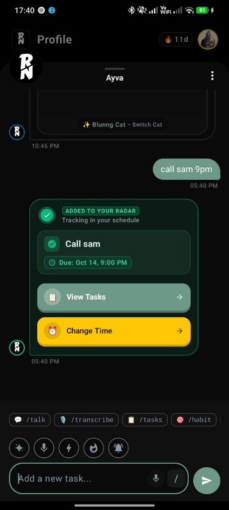
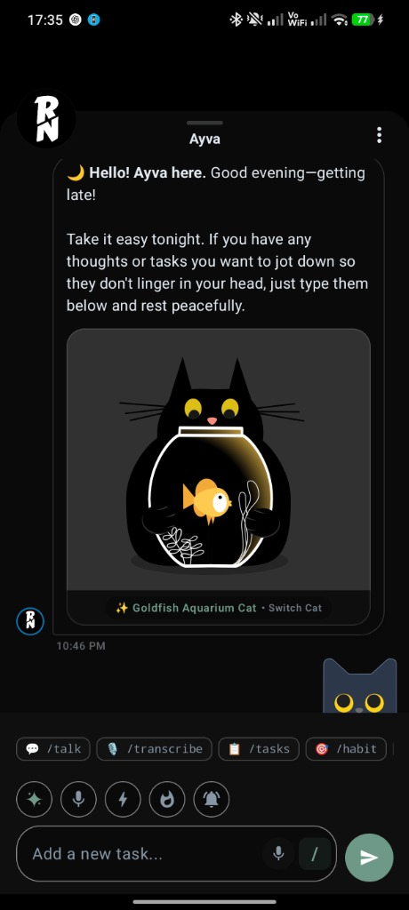
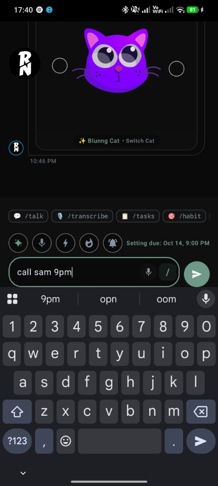
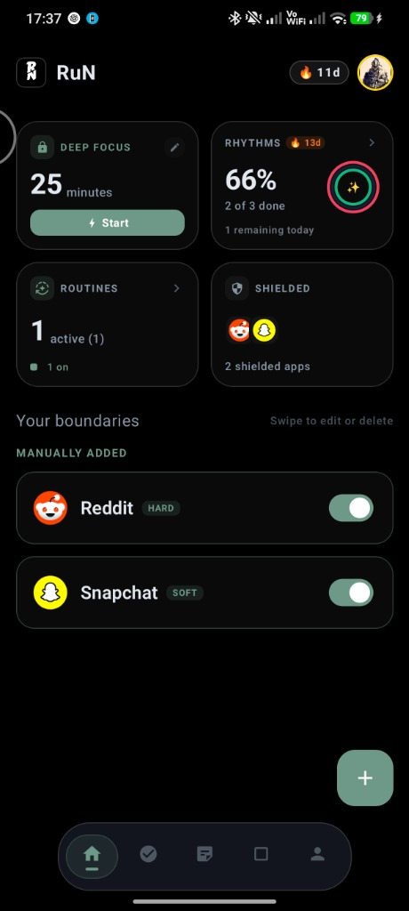
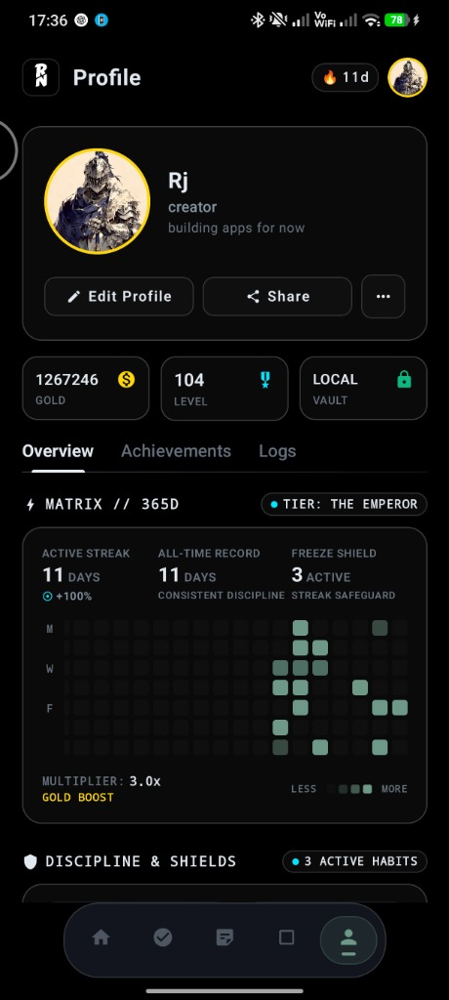
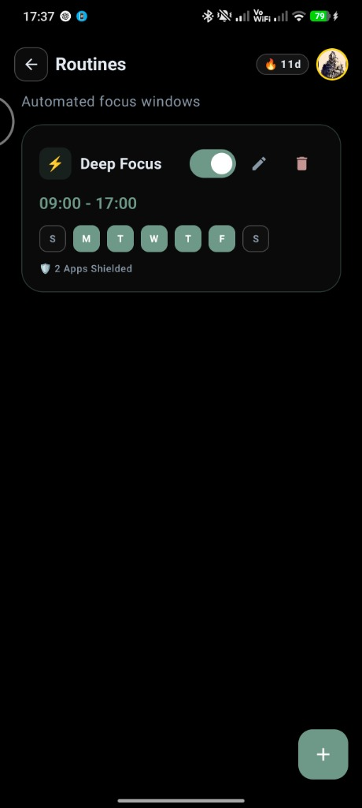
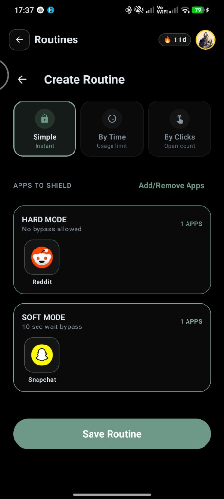
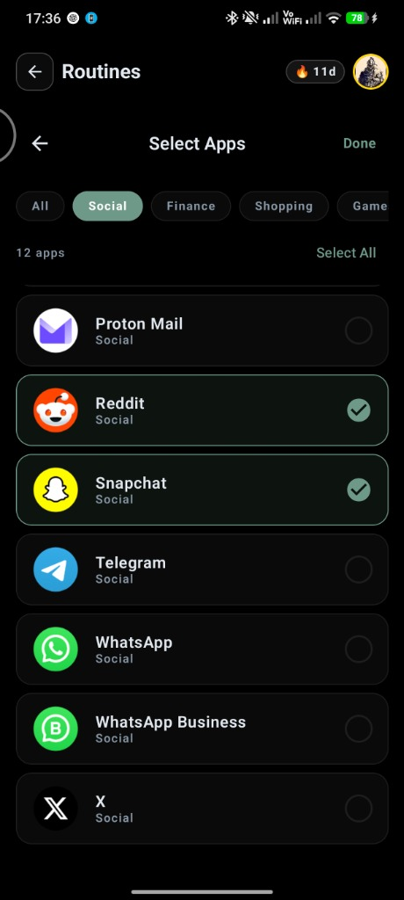
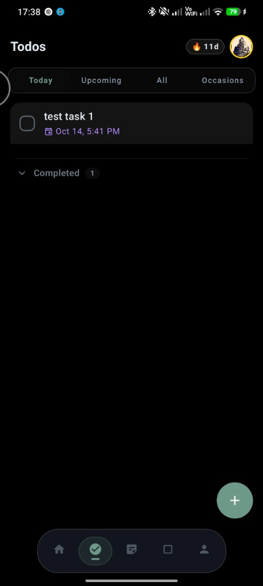
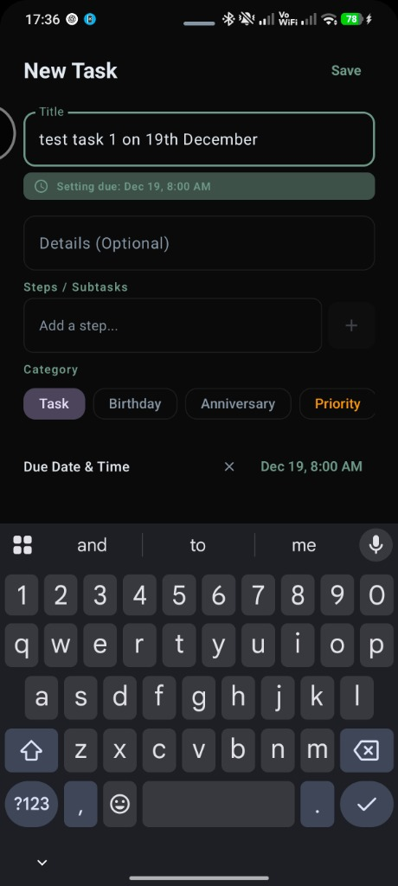

The strictly offline discipline OS. Add tasks in natural chat, shield your attention with hardware-bypassing app boundaries, and build a 365-day discipline matrix—with zero internet permissions.










No accounts. No subscriptions. No internet. Just a clean, powerful toolkit for deep focus.
Just text Ayva like a friend—type "call sam 9pm" or "workout tomorrow morning". Ayva understands the time, sets the reminder, and puts it straight on your radar. No fiddling with date pickers.
Other blockers get killed by Android. Ayva locks distracting apps instantly with a direct system shield.
A full-year heatmap that fills with green squares each day you stay disciplined. Level up your profile, earn streak multipliers, and use freeze shields when life gets in the way.
Set your work hours once—like 9 AM to 5 PM on weekdays. Ayva turns on focus mode and shields social media automatically so you can get into the zone.
Ayva has zero network permissions in Android. It literally cannot connect to the internet. Your chats, tasks, habits, and notes never leave your device.
A distraction-free notebook built for serious thinking. Personal notes are blocked from screenshots, screen recorders, and app switcher previews so nobody can snoop over your shoulder.
Ayva is open-source, fully reproducible, and built for total privacy. Install the signed APK directly or review the complete Kotlin codebase on GitHub.